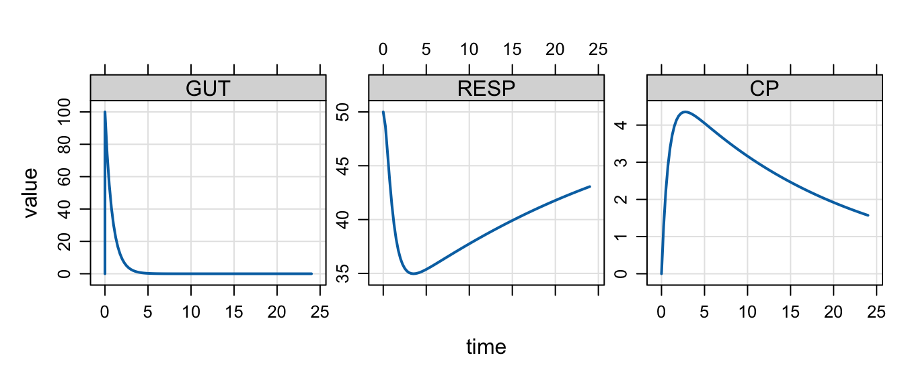

ev(amt = 100, ii = 12, addl = 2)Events:
time amt ii addl cmt evid
1 0 100 12 2 1 1Event objects are quick ways to generate an intervention or a sequence of interventions to apply to your model.
These are like quick and easy data sets.
Use ev() and pass NMTRAN data names in lower case.
For example
ev(amt = 100, ii = 12, addl = 2)Events:
time amt ii addl cmt evid
1 0 100 12 2 1 1You can pass
time time of the eventevid event ID
amt dose amountcmt compartment for the intervention
ii inter-dose intervaladdl additional doses (or events)
total alternative for total number of dosesss advance to steady-state?
rate give the dose zero-order with this rate
tinf alternative for infusion timeSee ?ev for additional details.
Pipe the model object to ev() then simulate.
mod <- house(outvars = "GUT,CP,RESP", end = 24)
mod %>% ev(amt = 100) %>% mrgsim() %>% plot()
You can save the event object out and pass it in.
e <- ev(amt = 100)
mod %>% ev(e) %>% mrgsim() %>% plot()This is a good idea when you want to create an intervention and apply it in several different simulation scenarios.
Alternatively, you can pass it in as the events argument for mrgsim()
mod %>% mrgsim(events = e) %>% plot()We can create more complex interventions from several simpler event objects.
Use the c() operator to concatenate.
For 100 mg loading dose followed by 50 mg daily x6
load <- ev(amt = 100)
maintenance <- ev(time = 24, amt = 50, ii = 24, addl = 5)
c(load, maintenance)Events:
time amt cmt evid ii addl
1 0 100 1 1 0 0
2 24 50 1 1 24 5We can make this simpler by putting these in a sequence. Here is 100 mg daily for a week, followed by 50 mg daily for the rest of the month
a <- ev(amt = 100, ii = 24, total = 7)
b <- ev(amt = 50, ii = 24, total = 21)
seq(a,b)Events:
time amt ii addl cmt evid
1 0 100 24 6 1 1
2 168 50 24 20 1 1Pass an event object to ev_rep() with the IDs you want
seq(a,b)Events:
time amt ii addl cmt evid
1 0 100 24 6 1 1
2 168 50 24 20 1 1seq(a,b) %>% ev_rep(1:3) ID time amt ii addl cmt evid
1 1 0 100 24 6 1 1
2 1 168 50 24 20 1 1
3 2 0 100 24 6 1 1
4 2 168 50 24 20 1 1
5 3 0 100 24 6 1 1
6 3 168 50 24 20 1 1Use as_data_set with ev_rep() to create a data set
c <- seq(a,b)
as_data_set(
a %>% ev_rep(1:2),
b %>% ev_rep(1:2),
c %>% ev_rep(1:2)
) ID time amt ii addl cmt evid
1 1 0 100 24 6 1 1
2 2 0 100 24 6 1 1
3 3 0 50 24 20 1 1
4 4 0 50 24 20 1 1
5 5 0 100 24 6 1 1
6 5 168 50 24 20 1 1
7 6 0 100 24 6 1 1
8 6 168 50 24 20 1 1You can use a selection of the tidyverse to modify event objects
single <- ev(amt = 100)
ss <- mutate(single, ii = 24, ss = 1)
ssEvents:
time amt ii ss cmt evid
1 0 100 24 1 1 1mutate()select()filter()ev_rx("100 mg x1 then 50 q12h x 10 at 24")Events:
time amt ii addl cmt evid
1 0 100 0 0 1 1
2 0 50 12 9 1 1